Superior heat rejection
Ceramic particles reject infrared heat far better than dyed or carbon film, so your cabin stays cooler and your A/C works less in the Florida sun.
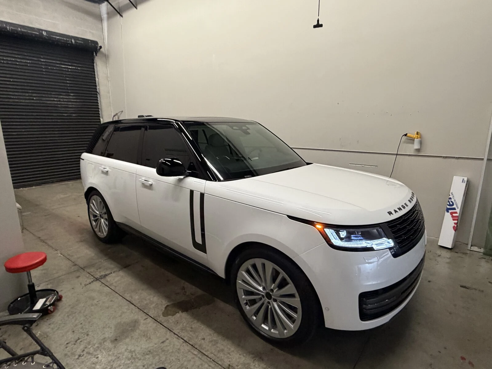
(Includes all 4 windows and Rear Windshield)
Florida sunshine, handled. Ceramic film keeps your cabin cooler, blocks UV and stays crystal clear, installed by Tamiami Tint of Naples.
Ceramic film uses non-metallic, nano-ceramic particles to block heat and UV without darkening your view or blocking your signals. It’s the upgrade Gulf Coast drivers feel every day.
Ceramic particles reject infrared heat far better than dyed or carbon film, so your cabin stays cooler and your A/C works less in the Florida sun.
Cut harsh sunlight and headlight glare while keeping excellent clarity, day or night, in a shade that meets current Florida requirements.
Quality ceramic film blocks up to 99% of UV rays, helping protect your skin and preventing leather, dash and trim from fading and cracking.
Ceramic is metal-free, so your phone, GPS, radio and keyless entry work normally. It won’t fade purple or bubble like cheaper films.
Performance figures vary by ceramic film line and shade. Ask Tamiami for the film specifications, vehicle eligibility and written warranty terms before booking.
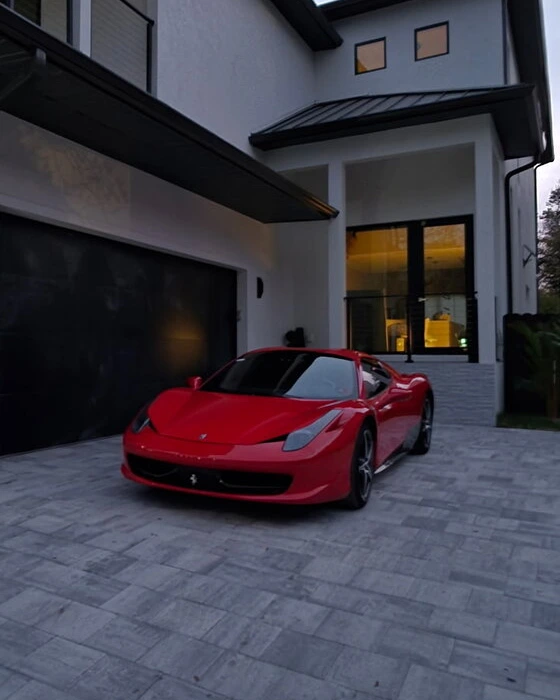
Daily driver or weekend favorite, your vehicle deserves a finish that feels like you. Explore real Tamiami tint installations, then talk with the Naples shop about the right ceramic shade for your drive.
Start with the included windows. Get the details for your vehicle before making an appointment with Tamiami.
Ceramic window tint only for $399 (Includes all 4 windows and Rear Windshield).
This offer uses ceramic film, a step up from dyed and carbon tint in heat rejection, clarity and durability.
Visit the local shop at 1040 Collier Center Way #19. Call ahead to discuss your vehicle and timing.
Browse Tamiami’s own tint projects and customer-owned Google review photos. No stock-car stand-ins.
The shop recommends waiting 3–5 days before rolling down new tint. Follow your installer’s care instructions.
From performance coupes to luxury cars, a closer look at window-tint projects published by the Naples shop. These photographs don’t define the shade in the $399 ceramic offer.
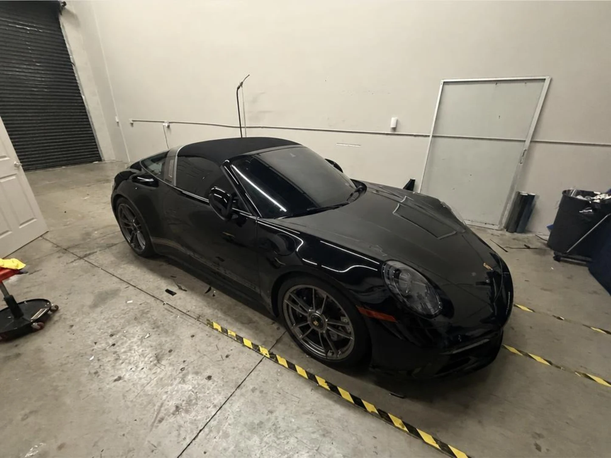
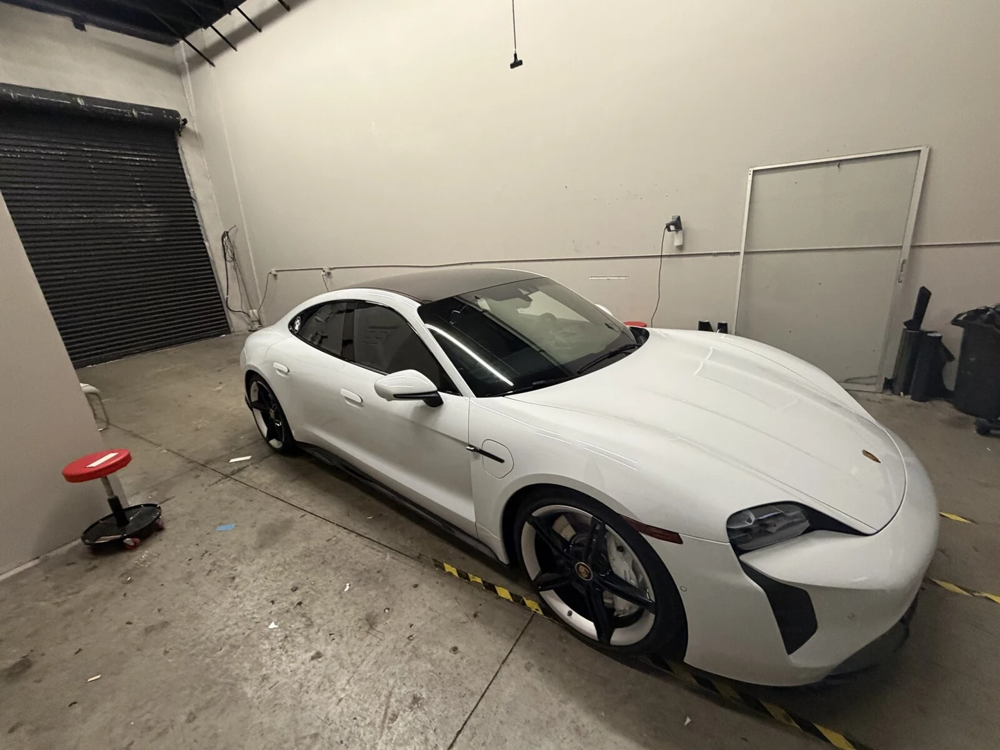
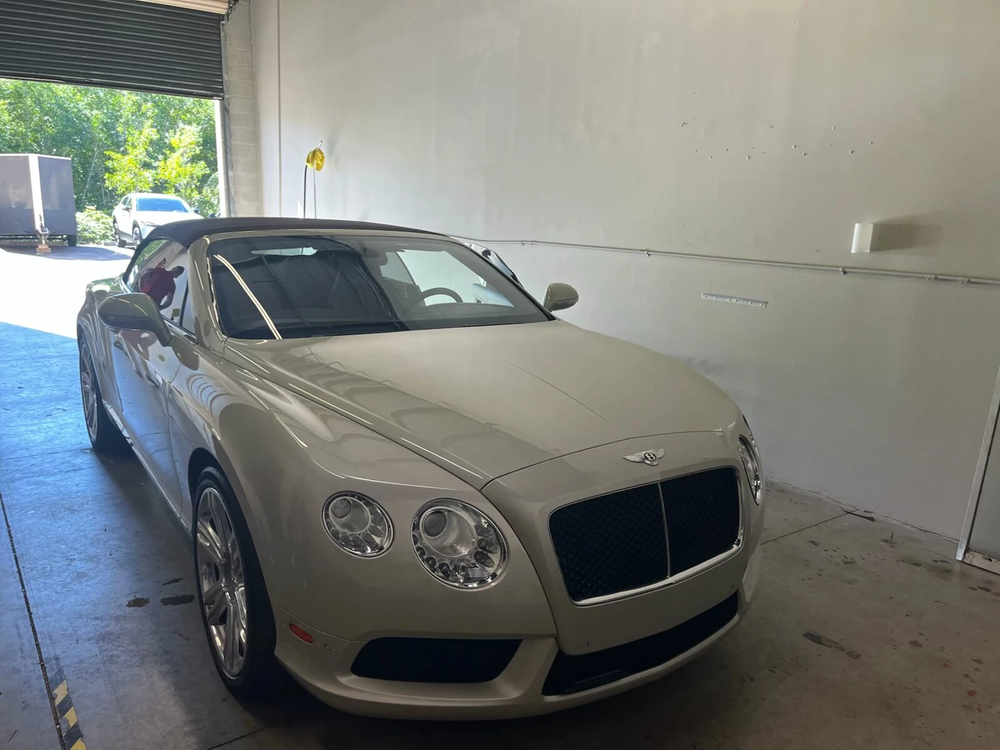
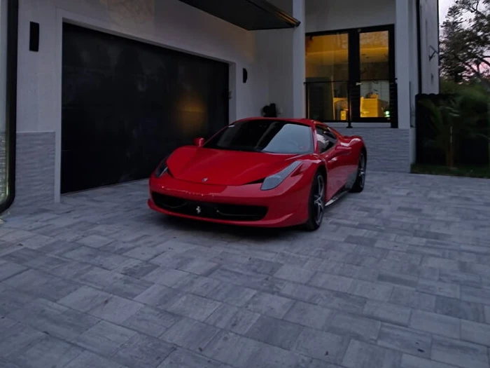
Real tint reviews. Each photograph belongs
to the reviewer whose words you’re reading.
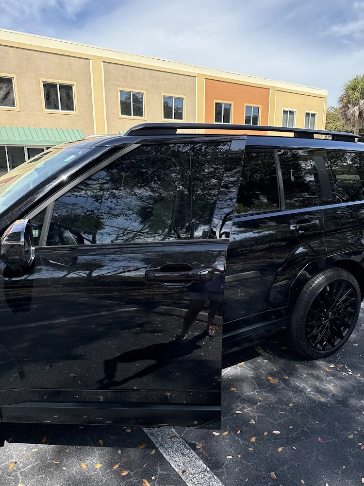
★★★★★“What an Amazing Quick quality installation. Eddie of TAMIAMI Tint explained the different types of tint and went straight to work.”Read the original Google review ↗
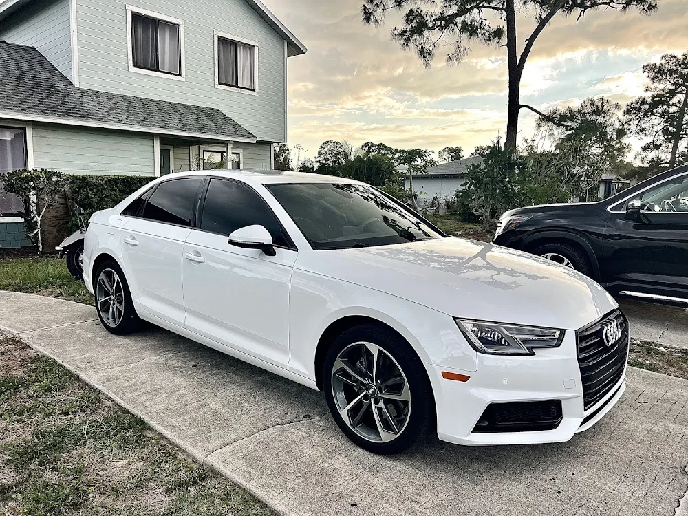
★★★★★“High quality ceramic tint, high quality work completed quickly and efficiently. Both cars have come out looking super clean and professionally done.”Read the original Google review ↗
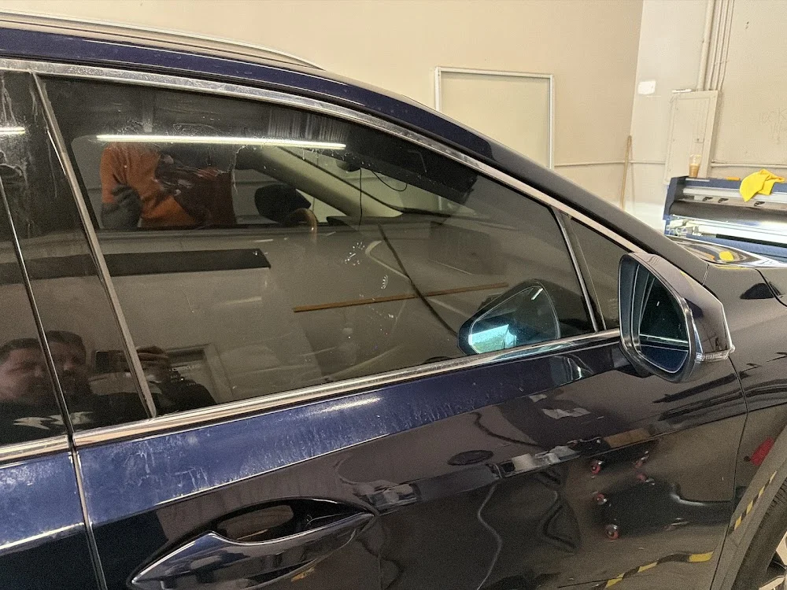
★★★★★“Good quality, fast, reliable. One of the best window tint in Naples, Florida. Thank you!”Read the original Google review ↗
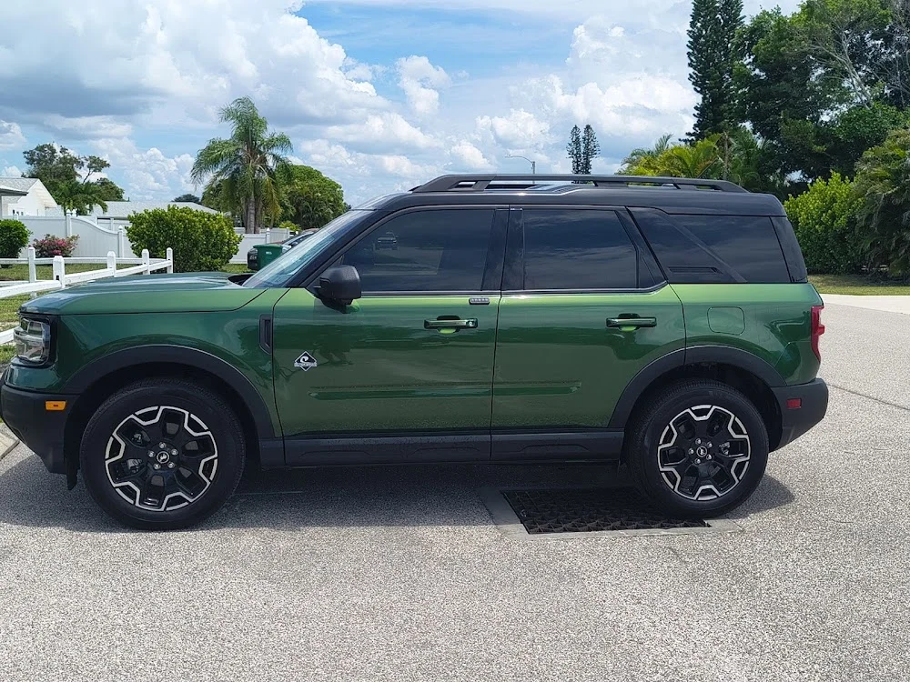
★★★★★“Scheduling an appointment was super easy, and the window tinting turned out excellent. Fast, professional, and great quality work.”Read the original Google review ↗
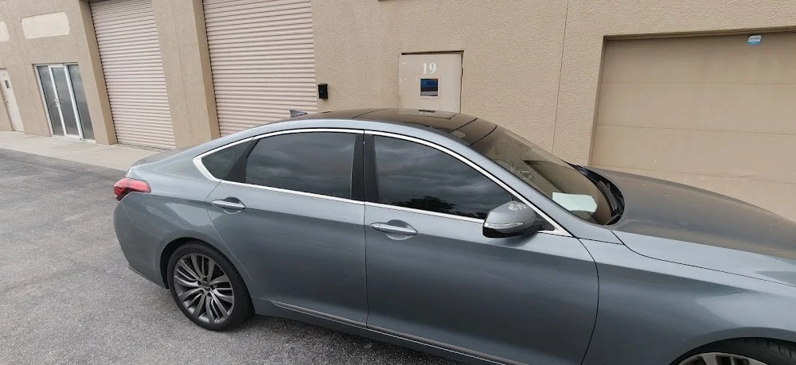
★★★★★“Shout out to tamiami tint of Naples. He did a really good job tinting the windows. Very quick, efficient and looks high quality. Thank you.”Read the original Google review ↗
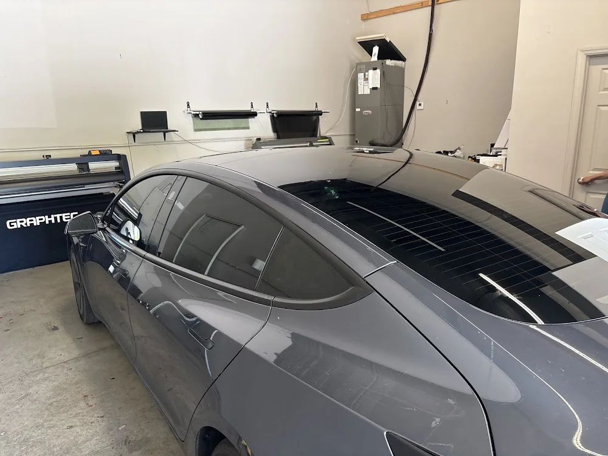
★★★★★“He does a great job and my car looks and feels much better better. Easily the best tint in Naples.”Read the original Google review ↗
Google rating and review count checked October 5, 2026. Every photo is attached to the named customer’s own review; image and source links open that original review. Excerpts describe individual experiences, not the film included in this offer.
Ceramic window tint only for $399 (Includes all 4 windows and Rear Windshield)
Confirm shade, vehicle eligibility, existing-tint removal and tax with Tamiami Tint of Naples before booking, and ask for the written lifetime warranty terms.
Prefer a conversation? (239) 710-5111 ↗Ceramic window tint only for $399 (Includes all 4 windows and Rear Windshield). The front windshield is not listed as included. Confirm vehicle eligibility, shade, removal charges and taxes with Tamiami before booking.
Ceramic film uses non-metallic nano-ceramic particles instead of dye or metal. That means stronger infrared heat rejection, up to 99% UV protection, sharper clarity, no fading or purpling over time and no interference with phone, GPS or radio signals.
Dyed film mainly darkens glass and can fade over time. Carbon film blocks more heat and won’t fade, but ceramic rejects the most heat at any given shade while staying clear and signal-friendly. Tamiami’s website lists carbon from $299, ceramic from $399 and premium ceramic from $499.
No. Ceramic film rejects heat through its particles, not just its darkness, so even a lighter shade can keep your cabin noticeably cooler while staying within Florida tint limits.
For Naples drivers, yes. Year-round sun means more heat, glare and UV exposure. Ceramic tint keeps the cabin cooler, eases the load on your A/C and protects your interior from fading.
Timing depends on your vehicle, glass coverage, film and any existing-tint removal. Call Tamiami with your year, make and model for an estimate and appointment availability.
Tamiami recommends keeping windows up for 3–5 days, longer in humid weather, and waiting 1–2 weeks before cleaning the inside glass. Use a soft microfiber cloth and ammonia-free cleaner. Follow the instructions given for your installation.
The $399 ceramic tint comes with a lifetime warranty. Shade options depend on the ceramic film line and your vehicle. Ask for the film specifications and the written warranty terms before booking, and choose a configuration that meets current Florida requirements.
The shop is at 1040 Collier Center Way #19, Naples, FL 34110. Call (239) 710-5111 or open directions on Google Maps.
Use the inquiry form above with your name, phone number and car details, or call (239) 710-5111 to discuss your vehicle with Tamiami.